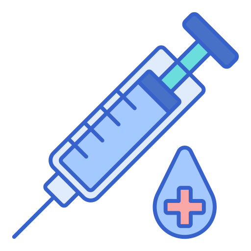

A vacinação é uma das principais estratégias de proteção da saúde pública. Por meio dela, milhões de pessoas são protegidas contra doenças graves, reduzindo surtos, internações e mortes. No Brasil, as vacinas são oferecidas gratuitamente pelo Sistema Único de Saúde (SUS), garantindo acesso à população.
A vacinação é o processo de aplicação de vacinas para estimular o sistema imunológico a produzir defesa contra vírus e bactérias. As vacinas ajudam o organismo a reconhecer doenças e combatê-las antes que causem complicações graves.
Além da proteção individual, a vacinação também protege toda a comunidade, diminuindo a circulação de doenças e evitando epidemias.
O Programa Nacional de Imunizações (PNI) foi criado em 1973 pelo Ministério da Saúde. Seu objetivo é coordenar as campanhas de vacinação em todo o Brasil e garantir o acesso gratuito às vacinas pelo SUS.

As vacinas evitam doenças graves e reduzem o número de internações e mortes.
Quando muitas pessoas estão vacinadas, a circulação dos vírus diminui, protegendo também quem não pode se vacinar.
A vacinação ajudou o Brasil a eliminar ou controlar doenças como poliomielite, sarampo e rubéola.
O Ministério da Saúde organiza vacinas para cada fase da vida.
Informações falsas sobre vacinas fazem muitas pessoas deixarem de se vacinar.
Nos últimos anos, houve redução na cobertura vacinal em diversas regiões do país.
O Ministério da Saúde realiza campanhas para incentivar a população a manter a vacinação em dia.
A vacinação é essencial para proteger a população e prevenir doenças graves. O Brasil possui um dos maiores programas públicos de imunização do mundo, oferecendo vacinas gratuitas pelo SUS. Manter a caderneta de vacinação atualizada é um ato de cuidado individual e coletivo.
Gostaria de saber mais sobre campanhas de vacinação na sua área pelo seu e-mail? Preencha o formulário sobre vacinação.